DOM 的全称为 Document Object Model，译为文档对象模型。DOM 规定了浏览器应该如何创建 HTML 页面，以及 JavaScript 如何访问和修改浏览器窗口中的 Web 页面的内容。
The Document Object Model is a platform- and language-neutral interface that will allow programs and scripts to dynamically access and update the content, structure and style of documents. The document can be further processed and the results of that processing can be incorporated back into the presented page.
DOM 是一个独立于任何语言和平台的接口，允许任何语言或脚本动态地访问和更新 HTML 文档的内容、结构和样式。该 HTML 页面可以进一步处理，并且该处理的结果可以被合并到所呈现的 HTML 页面中。
"Dynamic HTML" is a term used by some vendors to describe the combination of HTML, style sheets and scripts that allows documents to be animated. The W3C has received several submissions from members companies on the way in which the object model of HTML documents should be exposed to scripts. These submissions do not propose any new HTML tags or style sheet technology.
DHTML（动态的 HTML）是一些厂商为了宣传所使用的术语，用来描述 HTML、CSS 和 JavaScript 的组合，允许 HTML 文档实现动态化。W3C 已经收到一些成员公司提交的关于 HTML 文档的对象模型应该暴露在 JavaScript 中的方法。这些建议中没有建议任何新的 HTML 标签或样式技术。W3C 正在努力确保动态交互和脚本语言的解决方案是一致的。
DOM 中每一个字母的含义如下:
D 表示 Document，即将一个 HTML 页面表示为一个文档。
O 表示 Object，即将一个 HTML 页面中的每一个部分都转换成一个对象。
DOM 实际上是以面向对象方式来描述一个 HTML 页面。其中 Document 对象主要处理 HTML 页面内容。
DOM 将一个 HTML 页面表示为一个树形结构的模型。（关于树形结构会在后面学习）
DOM 的级别包含非 W3C 标准的 0 级和 W3C 标准的 3 级:
值得注意的是: DOM level 0 并不是 W3C 的标准。
值得注意的是: DOM level 1 中忽略了事件模型。
DOM level 2: 是基于 DOM level 1 并且扩展了 DOM level 1，还添加了视图、事件以及 CSS 样式的内容。
DOM level 3: 引入了统一的文档读取和保存的方法，以及文档验证的内容等。
值得注意的是: DOM level 3 引入的主要是对 XML 文档的支持，对于 HTML 文档的用处并不大。
DOM 将 HTML 页面表示为一个树形结构，方便访问和操作 HTML 页面中的内容。具体如何表示，我们可以通过如下示例来理解:
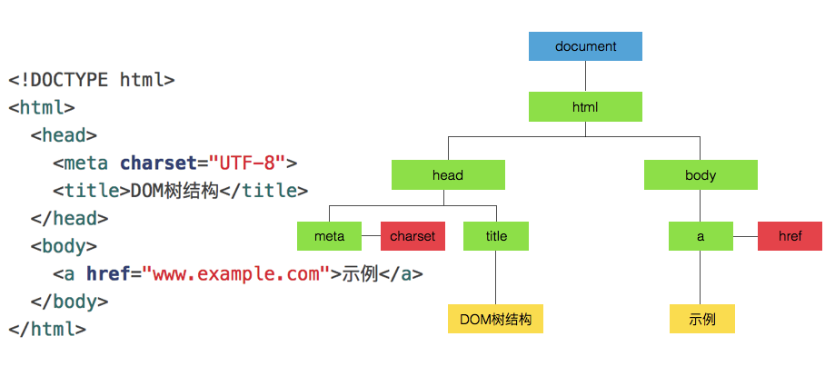
源代码: DOM 节点树的 HTML 页面
当浏览器加载 HTML 页面时，会创建这个 HTML 页面的模型。这个模型就叫做 DOM 树结构，会被保存到浏览器的内存中。
节点（node）是个网络术语，表示网络中的连接点。一个网络是由一些节点构成的集合。
在 DOM 树结构中主要由以下 4 种节点组成:
值得注意的是: 在 DOM 树结构中，属性节点比较特殊，它并不是所在元素节点的子节点。（子节点会在后面学习）
根据节点的分类，上面的 DOM 树结构就可以更详细的表示为如下示例:
当通过 DOM 节点树获取 HTML 页面的节点时，我们如何可以判断出当前节点是哪种类型呢？我们可以通过如下 3 个属性进行判断:
| nodeName | nodeType | nodeValue | |
|---|---|---|---|
| 文档节点 | #document | 9 | null |
| 元素节点 | 标签名 | 1 | null |
| 属性节点 | 属性名 | 2 | 属性值 |
| 文本节点 | #text | 3 | 文本内容 |
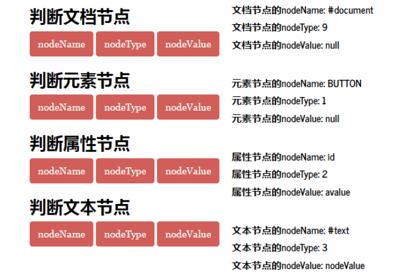
源代码: 判断 4 种节点类型
DOM 节点树的概念从上面的图示中可以一目了然。构成节点树结构的同时，节点与节点之间也存在着如下 3 种关系:
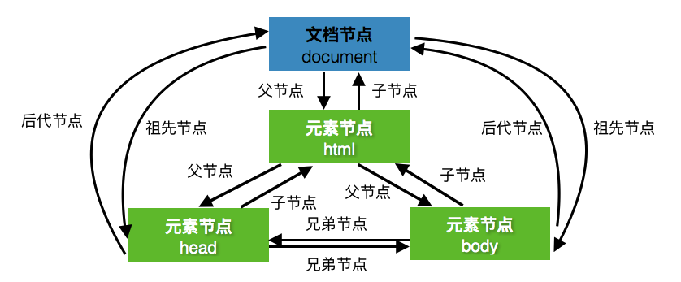
所谓事件，就是 HTML 页面或者浏览器窗口发生的一些交互瞬间。比如用户点击了 HTML 页面中的一个按钮，HTML 页面为用户提示一些内容，这个效果就是通过事件来完成的。
<!DOCTYPE html>
<html>
<head>
<meta charset="UTF-8">
</head>
<body>
<button id="btn">按钮</button>
<script>
var btn = document.getElementById('btn');
btn.onclick = function(){
console.log('你点中了我...');
}
</script>
</body>
</html> 也就是说，JavaScript 与 HTML 页面之间的交互是通过事件实现的。
在 DOM 中提供了一些标准的事件，我们可以直接使用。
| 事件名称 | 说明 |
|---|---|
| keydown | 用户按下一个按键 |
| keyup | 用户松开一个按键 |
| keypress | 用户输入了一个字符（ keydown + keyup 的组合） |
| 事件名称 | 说明 |
|---|---|
| click | 用户单击鼠标按键 |
| dblclick | 用户双击鼠标按键 |
| mousedown | 用户按下鼠标按键 |
| mouseup | 用户松开鼠标按键 |
| mouseover | 用户将鼠标移到指定标签上 |
| mousemove | 用户移动鼠标 |
| mouseout | 用户将鼠标从指定标签上移开 |
值得注意的是: 这里我们并没有将所有的事件全部罗列，而是罗列了键盘和鼠标对应的事件。
实现事件的步骤仅仅需要 3 步:
// 1. 获取 HTML 页面中指定的标签。
var btn = document.getElementById('btn');
// 2. 为指定标签绑定指定事件。
btn.onclick = function(){
// 3. 编写事件发生时的逻辑代码。
console.log('你点中了我...');
}事件的绑定除了可以通过 JavaScript 代码方式实现之外，HTML 页面的标签同样提供了一系列的事件属性可以使用。
例如通过 JavaScript 代码实现事件绑定的示例代码如下:
<!DOCTYPE html>
<html>
<head>
<meta charset="UTF-8">
</head>
<body>
<button id="btn">按钮</button>
<script>
var btn = document.getElementById('btn');
btn.onclick = function(){
console.log('你点中了我...');
}
</script>
</body>
</html>可以通过 HTML 页面标签提供的事件属性进行改写:
<!DOCTYPE html>
<html>
<head>
<meta charset="UTF-8">
<title>事件属性</title>
</head>
<body>
<button onclick="console.log('你点中了我...')">按钮</button>
</body>
</html>上述两种方式绑定事件的效果是一致的，并没有什么区别。
值得注意的是: 通过 HTML 页面标签提供的事件属性实现绑定事件，导致 HTML 页面代码和 JavaScript 代码之间的耦合性过高。并不建议使用这种方式！
浏览器加载 HTML 页面的顺序是自上向下的。所以，当 JavaScript 代码放置在 <body> 标签后或者对应 HTML 页面标签后，运行效果是正确的。（我们之前一直都是这样做的！）
但，如果我们想把 JavaScript 代码放置在 <body> 标签前或者是 <head> 标签中，如下代码:
<!DOCTYPE html>
<html>
<head>
<meta charset="UTF-8">
<title>HTML文档的加载</title>
</head>
<script>
var btn = document.getElementById('btn');
btn.onclick = function(){
console.log('你点中了我...')
}
</script>
<body>
<button id="btn">按钮</button>
</body>
</html>但是，运行之后，会出现如下错误:
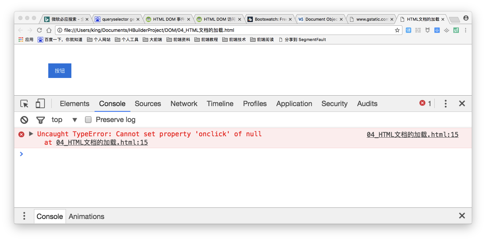
并且，按钮的点击事件并没有绑定成功。因为 HTML 页面的加载是自上向下的顺序，所以在执行 JavaScript 代码时，浏览器并没有加载 <body> 标签中的内容。所以，最终的结果就是报错。
想要解决这个问题，我们需要在 JavaScript 代码中加入如下代码:
window.onload = function(){
// JavaScript 代码
}window 对象表示的是浏览器窗口，onload 事件表示加载。所以，window.onload 就表示浏览器窗口在加载完毕时发生。
将处在 <body> 标签前或 <head> 标签中的 JavaScript 代码放置在上述代码中，问题即可解决。
window.onload = function(){
var btn = document.getElementById('btn');
btn.onclick = function(){
console.log('你点中了我...')
}
}W3C 提供的 DOM 标准通过一系列对象实现，其中主要以 Document 对象、Element 对象和 Node 对象为主。
我们学习 DOM 标准的 API 内容，也主要通过 Document 对象、Element 对象和 Node 对象这三个对象学习。
Document 对象表示浏览器加载的 HTML 页面，并作为查找 HTML 页面内容的入口。它提供了全局函数，例如如何从 HTML 页面中查找指定标签或者在 HTML 页面中如何创建标签等。
我们可以通过如下代码来测试 Document 对象:
console.log(document);通过浏览器的 console 查看会得到如下效果:
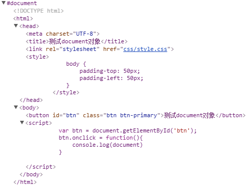
源代码: 测试 Document 对象
通过上面的测试结果，我们可以很清晰地看到，通过 Document 对象可以得到整个 HTML 页面。
获取 HTML 标签就是查找 HTML 页面中的元素节点，也可以称为 DOM 查询。基本有 5 种方式可以使用。
通过 HTML 页面标签的 id 属性值获取指定标签。语法格式如下:
document.getElementById(id属性值)下面我们通过一个简单的案例来了解掌握 getElementById() 方法的使用:
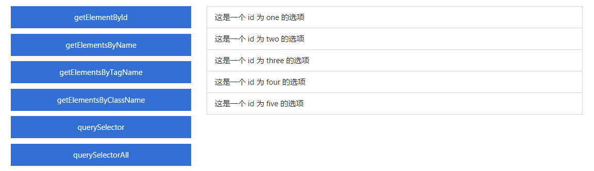
如上图所示，我们通过点击 getElementById 按钮来改变右边列表中指定选项的背景颜色。具体实现代码如下:
var btn1 = document.getElementById('btn1');
btn1.onclick = function(){
var one = document.getElementById('one');
one.style.backgroundColor = 'lightskyblue';
}最终实现的效果如下:
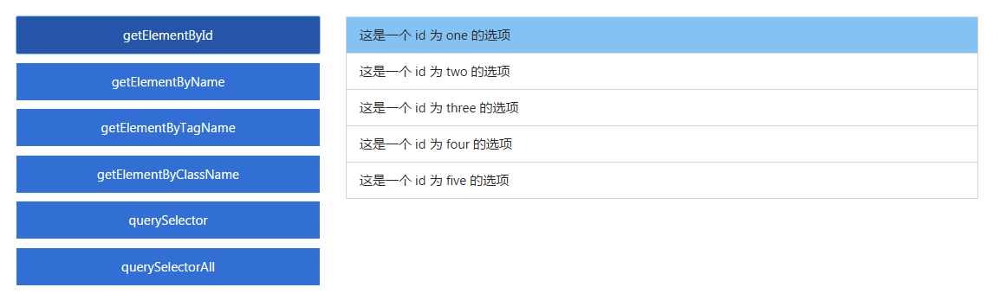
值得注意的是: 在 HTML 页面标签的 id 属性值是唯一的，所以通过 id 只能获取 HTML 页面中唯一的指定标签元素。
通过 HTML 页面标签的 name 属性值获取指定标签。语法格式如下:
document.getElementsByName(name属性值)下面我们通过一个简单的案例来了解掌握 getElementsByName() 方法的使用:
如上图所示，我们通过点击 getElementsByName 按钮来改变右边列表中指定选项的背景颜色。具体实现代码如下:
var btn2 = document.getElementById('btn2');
btn2.onclick = function(){
var lis = document.getElementsByName('list');
for (var i=0;i<lis.length;i++) {
lis[i].style.backgroundColor = 'lightgreen';
}
}最终实现的效果如下:
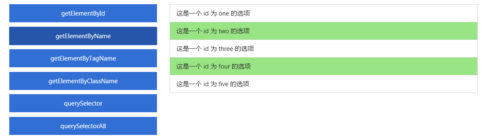
通过 HTML 页面标签名获取指定标签。语法格式如下:
document.getElementsByTagName(标签名)下面我们通过一个简单的案例来了解掌握 getElementsByTagName() 方法的使用:
如上图所示，我们通过点击 getElementsByTagName 按钮来改变右边列表中指定选项的背景颜色。具体实现代码如下:
var btn3 = document.getElementById('btn3');
btn3.onclick = function(){
var lis = document.getElementsByTagName('li');
for (var i=0;i<lis.length;i++) {
lis[i].style.backgroundColor = 'lightcoral';
}
}最终实现的效果如下:
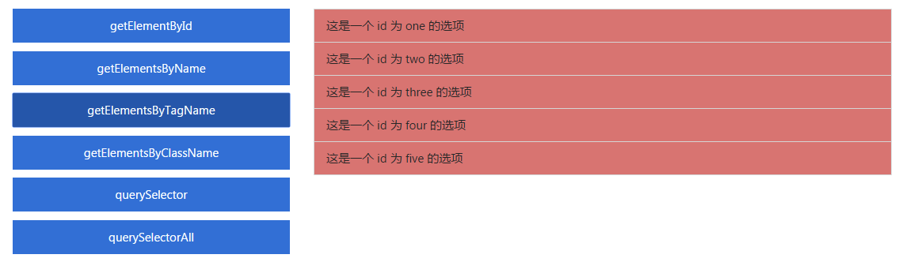
通过 HTML 页面标签的 class 属性值获取指定标签。语法格式如下:
document.getElementsByClassName(标签名)下面我们通过一个简单的案例来了解掌握 getElementsByClassName() 方法的使用:
如上图所示，我们通过点击 getElementsByClassName 按钮来改变右边列表中指定选项的背景颜色。具体实现代码如下:
var btn4 = document.getElementById('btn4');
btn4.onclick = function(){
var lis = document.getElementsByClassName('list-group-item');
for (var i=0;i<lis.length;i++) {
lis[i].style.backgroundColor = 'lightseagreen';
}
}最终实现的效果如下:
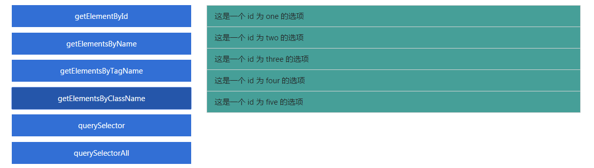
值得注意的是:
getElementsByClassName()方法在 IE 浏览器中，只能是 IE 9 版本之后才支持。（换句话讲，getElementsByClassName()方法存在浏览器兼容问题。）
在 HTML5 新特性中提供了两个可以通过 CSS 选择器方式来获取 HTML 页面标签的方法:
querySelector(selector): 返回第一个选择器匹配的 HTML 页面元素。querySelectorAll(selector): 返回全部选择器匹配的 HTML 页面元素。值得注意的是: 这两个方法只能是 IE 8 版本之后才执行。
var btn5 = document.getElementById('btn5');
btn5.onclick = function(){
var two = document.querySelector('#two');
two.style.backgroundColor = 'lightskyblue';
}
var btn6 = document.getElementById('btn6');
btn6.onclick = function(){
var lis = document.querySelectorAll('.list-group-item');
for (var i=0;i<lis.length;i++) {
lis[i].style.backgroundColor = 'lightseagreen';
}
}值得注意的是:
DOM 查询方法我们大致可以分为以下两类:
传统方式:
getElementById、getElementsByName、getElementsByTagName和getElementsByClassName
- 优点: 性能好、查询速度快
- 缺点: 使用麻烦
HTML5新增:
querySelector和querySelectorAll
- 优点: 使用简便
- 缺点: 性能差、查询速度慢
当我们通过 DOM 查询获取 HTML 页面中指定的标签后，如果需要多次操作同一个标签时，应该使用一个变量来保存 DOM 查询的结果。
var btn1 = document.getElementById('btn1');
btn1.onclick = function(){
var one = document.getElementById('one');
one.style.backgroundColor = 'lightskyblue';
}当把 DOM 查询的结果保存在一个变量后，实际上是把获取的指定标签在 DOM 节点树中的位置保存在变量中。这个元素节点（标签）的属性和方法可以通过这个变量来使用。
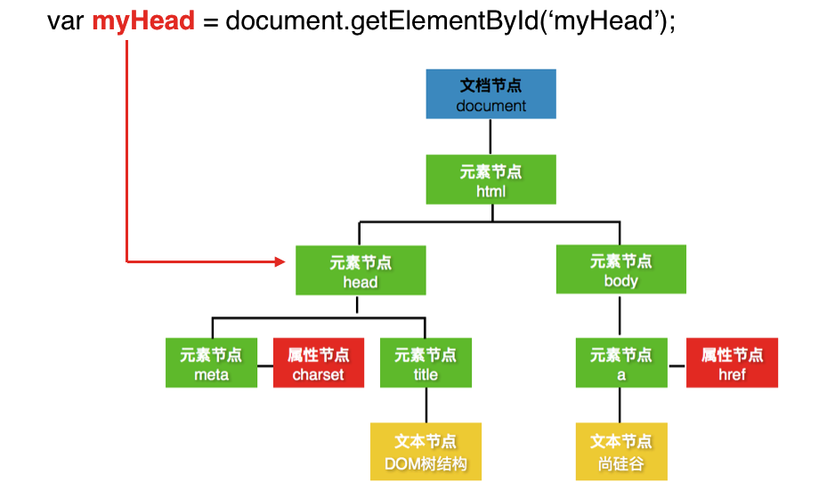
NodeList 是一组元素节点的集合，每个节点都有索引值（从 0 开始的数字，类似数组）。元素节点在 NodeList 中保存的顺序和它们在 HTML 页面中出现的顺序一致。
当使用 DOM 查询获取 HTML 页面中指定的元素时，如下使用如下查询方法:
上述方法所返回的就是一个 NodeList 集合。
通过 NodeList 集合我们可以从中选择需要操作的元素，也可以遍历 NodeList 中的每个元素。
通过 getElementsByName()、getElementsByTagName() 和 getElementsByClassName() 方法获取的 NodeList 就是动态的 NodeList。
在动态 NodeList 中，当脚本更新 HTML 页面之后，NodeList 也会同样进行更新。例如如下示例:
<!DOCTYPE html>
<html>
<head>
<meta charset="UTF-8">
<title>动态NodeList</title>
<link rel="stylesheet" href="css/style.css" />
<style>
body {
padding: 100px;
}
</style>
</head>
<body>
<ul id="data" class="list-group">
<li id="one" class="list-group-item">这是一个 id 为 one 的选项</li>
<li id="two" name="list" class="list-group-item">这是一个 id 为 two 的选项</li>
<li id="three" class="list-group-item">这是一个 id 为 three 的选项</li>
<li id="four" name="list" class="list-group-item">这是一个 id 为 four 的选项</li>
<li id="five" class="list-group-item">这是一个 id 为 five 的选项</li>
</ul>
</body>
<script>
var lis = document.getElementsByTagName('li');
console.log(lis.length);// <li> 标签的数量为 5
// 向 <ul> 标签中添加一个新的 <li> 标签
var li = document.createElement('li');
var data = document.getElementById('data');
data.appendChild(li);
console.log(lis.length);// <li> 标签的数量为 6
</script>
</html>源代码: 测试动态的 NodeList
通过 querySelectorAll() 方法获取的 NodeList 就是动态的 NodeList。
在动态 NodeList 中，当脚本更新 HTML 页面之后，NodeList 也不会进行更新。例如如下示例:
<!DOCTYPE html>
<html>
<head>
<meta charset="UTF-8">
<title>静态NodeList</title>
<link rel="stylesheet" href="css/style.css" />
<style>
body {
padding: 100px;
}
</style>
</head>
<body>
<ul id="data" class="list-group">
<li id="one" class="list-group-item">这是一个 id 为 one 的选项</li>
<li id="two" name="list" class="list-group-item">这是一个 id 为 two 的选项</li>
<li id="three" class="list-group-item">这是一个 id 为 three 的选项</li>
<li id="four" name="list" class="list-group-item">这是一个 id 为 four 的选项</li>
<li id="five" class="list-group-item">这是一个 id 为 five 的选项</li>
</ul>
</body>
<script>
var lis = document.querySelectorAll('li');
console.log(lis.length);// <li> 标签的数量为 5
// 向 <ul> 标签中添加一个新的 <li> 标签
var li = document.createElement('li');
var data = document.getElementById('data');
data.appendChild(li);
console.log(lis.length);// <li> 标签的数量为 5
</script>
</html>源代码: 测试静态的 NodeList
本笔记的内容免费开源，任何人都可以免费学习、分享，甚至可以进行修改。但需要注明作者及来源，并且不能用于商业。
本笔记采用知识共享署名-非商业性使用-禁止演绎 4.0 国际许可协议进行许可。